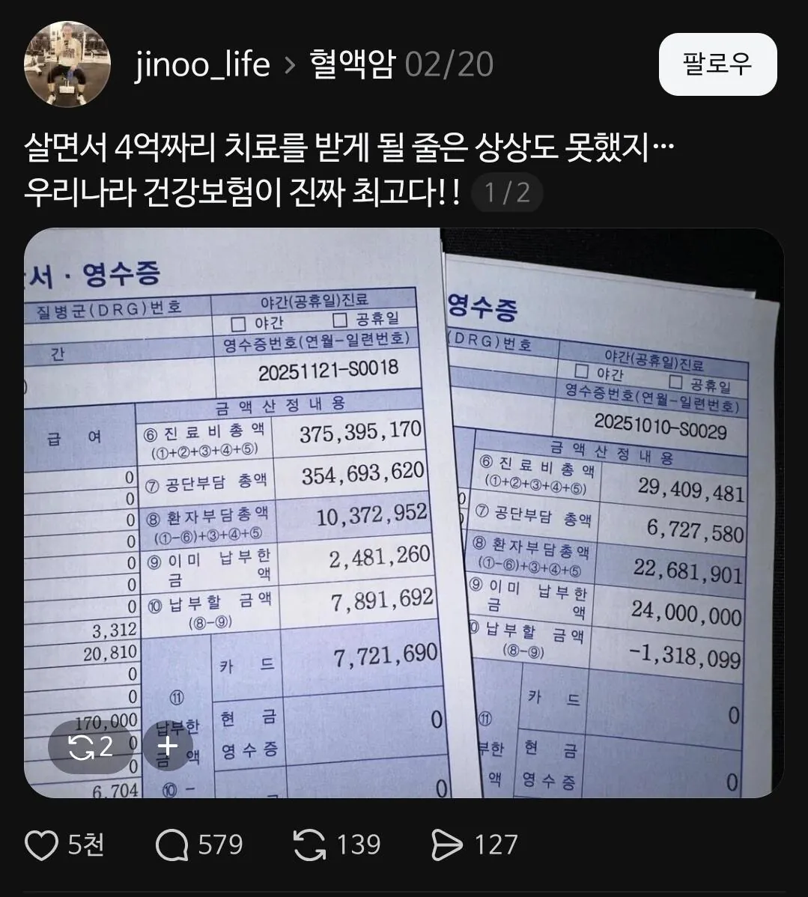
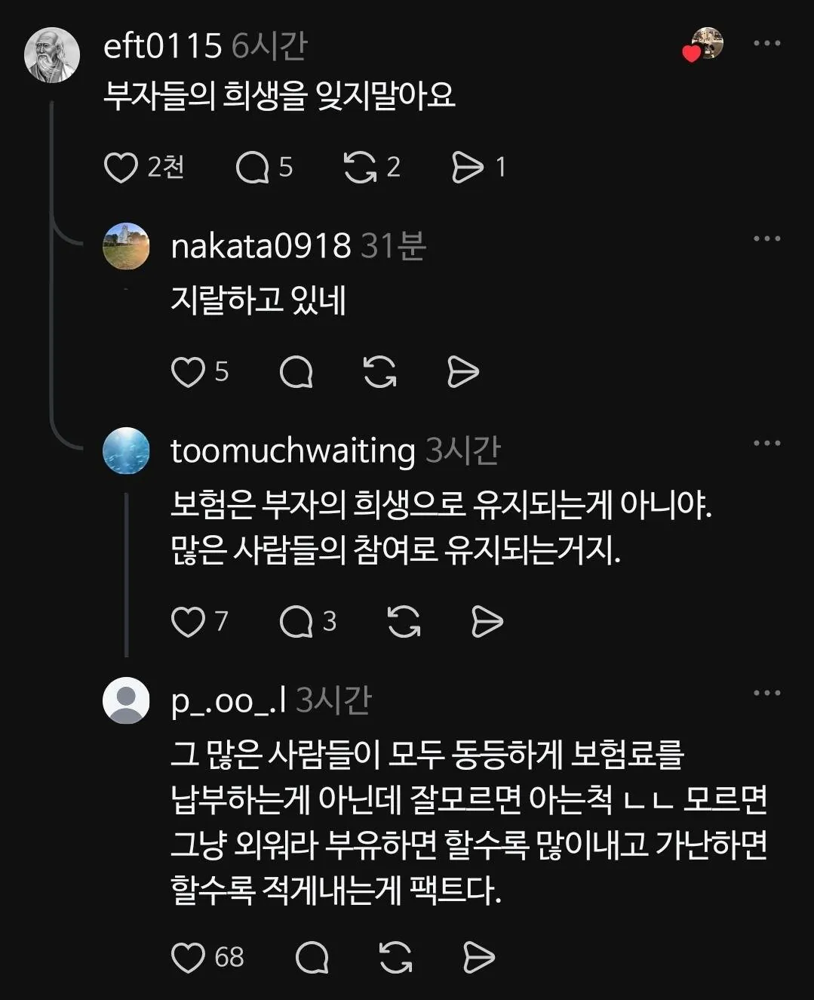

그 와중에 건보료 많이 내고도 욕 먹는 부자들 ㅋㅋ


그 와중에 건보료 많이 내고도 욕 먹는 부자들 ㅋㅋ
다 닥쳐봐 돈 많은 애들이 내 치료비 다 대주고 있으니까 살살 달래야된다고
재산은 쥐뿔도없는 고소득자에게 감사하시오....
작성자도 병신인게
1. "부자들의 희생을 잊지말아요" - 라고 희생하는것처럼 표현해서 논쟁이 된건데
2. 그 와중에 "건보료 많이 내고도 욕 먹는 부자들" 이라면서 일반화를 시켜버리네
개병신 논리로 시작해서 일반화까지 시키는,
소문의 확산을 실시간으로 볼 수 있네.
나도 건보료 낸 만큼 못받고 돈아까운건 사실이지만 그렇다고 돈 안내야겠어 그렇게 생각하지도 않고,
희생이니 부자들에게 감사해야한다느니 그런 건 좀 덜떨어져보임. 평소 어떤 생각을 가지고 사는건지 신기하네
소득에 따라서 많이 내는 건데..
희생이라고 보는건가..그냥 사회 시스템이잖아
부자들에게 감사를 표할 필요까지는 없지만
부자들로 인해 이 시스템이 유지되는 것만이라도 인지하면 좋을 듯
시스템 덕에 부자들이 부를 유지할 수 있는 것이니 그냥 서로 감사하는게 맞다.
맞음. 근데 이걸 모르는 사람들이 너무 많다...
착각 ㄴㄴ. 부자들로 인해 이 시스템이 유지되는거 아니다.
부자들이 부자가 되게끔 레버리지를 제공한 사람들이 있었고 그 사람들의 대부분이 낮은 소득을 가지고있으니 그냥 제도로 보장하는 상부상조 중 하나인거지 뭔 희생까지 언급할건 아닌듯
작성자 이름봐라
하이닉스 다니나봐
세금 많이 내니까 뭐 그려러니 한다
그지새끼들이라 그런가 감사함도 모르네
인심은 곳간에서 나는 것이긴 하지
못배운 저소득자들아 대가리 박고 감사하자
난.이미 박았다
사회가 어떻게돌아가는지도 모르고 그저 욕만...

많이 버는게 희생은 아니지
부자만의 희생은 아니지. 모두가 자기 상황에 맞게 부담하는 거니까.
그리고 부자가 절대적으로 많이 내는 건 사실이니 거기에 고마워할 수 있지
가만 댓글 보고 있으면 그냥 가볍게 감사하다 표현할 수도 있는 건데
뭐 존경까지 해야 할 수 있는 말인 줄 알겠음
그냥 시스템에 감사하고 앞으로 어려운일 있을때 내가 받았던 혜택만큼 앞으로 어려운 사람들을 더 도와줘야 겠다라는 마인드가 낫지 않을까 싶음 ㅋㅋㅋㅋㅋ